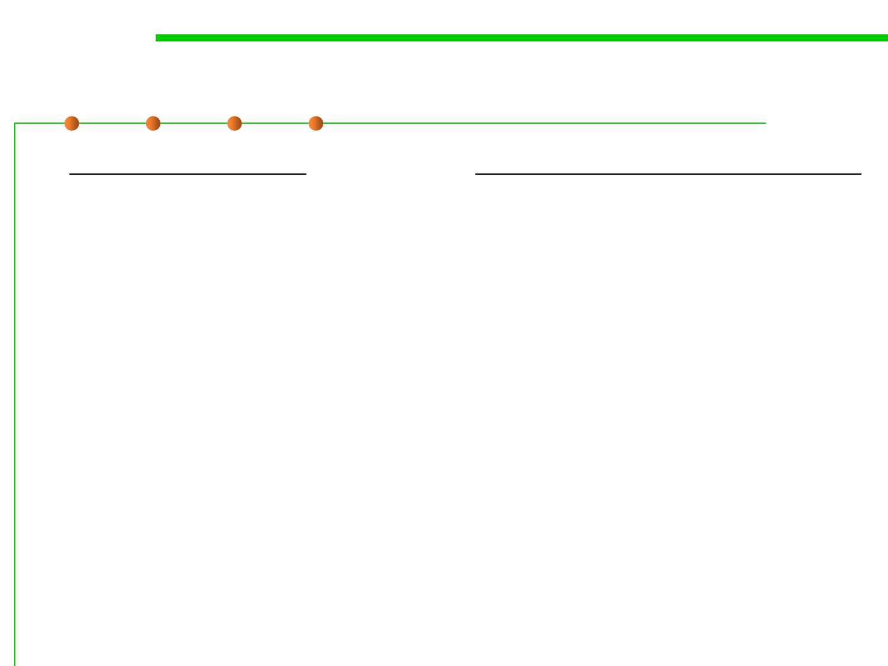

Refactoring patterns
9.2 Refactoring Techniques and Tool Support
▪ Composing Methods
– Extract Method
– Inline Method
– Inline Temp
– Replace Temp with Query
– Introduce Explaining Variable
– Split Temporary Variable
– Remove Assignments to Parameters
– Replace Method with Method Object
– Substitute Algorithm
▪ Moving Features Between Objects
– Move Method
– Move Field
– Extract Class
– Inline Class
– Hide Delegate
– Remove Middleman
– Introduce Foreign Method
– Introduce Local Extension